Sistemas de Inteligencia Artificial · TP5 · Grupo 4
Autoencoders:
letras, ruido y sonido
Ignacio Searles · Ivo Vilamowski · Agustín Galán
Nicolás Koron · Toribio Viton Sconza
1
Autoencoder del font
32 caracteres de 5×7 píxeles. ¿Entran en dos números?
Aprender las 32 letras
Aprender las 32 letras · Espacio latente · Letras nuevas · Denoising
Para aprender las 32 letras
- Ocultas 64-32-16: llega siempre y en 200 épocas
- tanh y Adam con η = 0,01: lo más rápido, y con esta red no rebota
- Latente de 2: lo pide la consigna y llega en todas las semillas
Espacio latente
Aprender las 32 letras · Espacio latente · Letras nuevas · Denoising
Letras nuevas
Aprender las 32 letras · Espacio latente · Letras nuevas · Denoising
Decodificando todo el plano aparecen letras nuevas
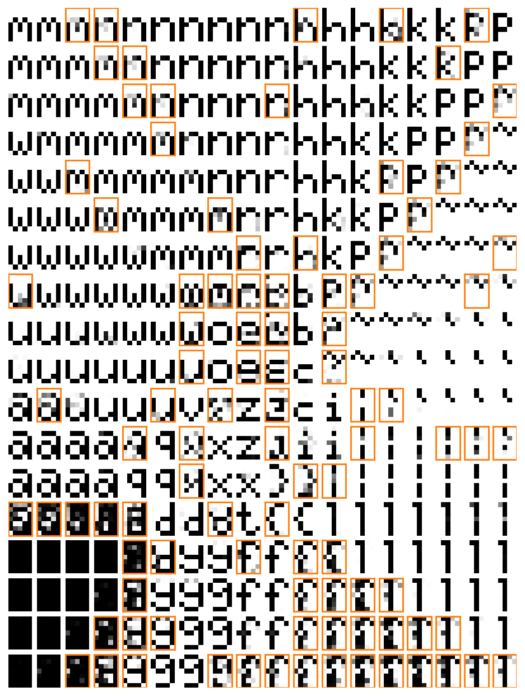
Grilla de 18×18 sobre el plano, decodificada
Las letras ocupan regiones; entre ellas, mezclas
En naranja, lo que no está en el font: 30 %
Denoising autoencoder
Aprender las 32 letras · Espacio latente · Letras nuevas · Denoising
2
VAE de sonido
Notas de instrumentos reales. ¿Puede inventar una nueva?
Los datos
Los datos · Autoencoder contra VAE · Generar
1.108 notas de 10 familias de instrumentos
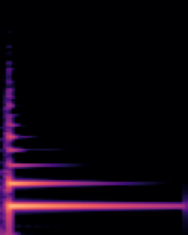
bajo
 metal
metal
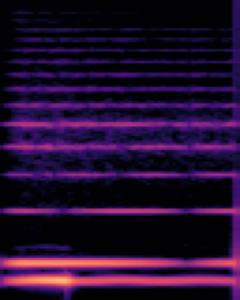
flauta
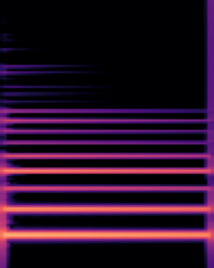
guitarra
 teclado
teclado
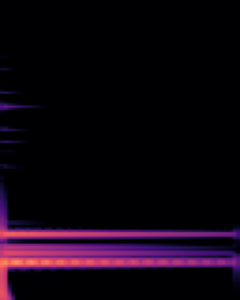
percusión
 órgano
órgano
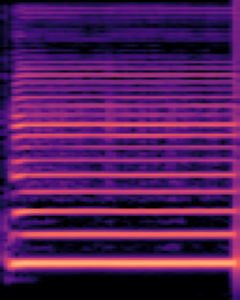
lengüeta
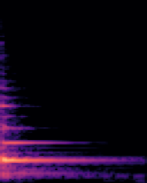
cuerdas
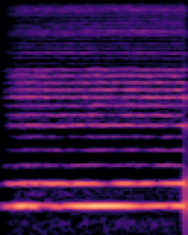
voz
NSynth: un segundo a 16 kHz, notas MIDI 48 a 72, hasta 150 por familia.
Lo metálico venía de pasar a audio, no de la red
19,8
dB de distorsión en una nota de voz, sin red de por medio
14,0
invirtiendo las bandas sin valores negativos (NNLS)
7,3
con 128 bandas en lugar de 64
Las notas con muchos armónicos eran las peores: con 64 bandas, una banda aguda abarcaba varios armónicos.
Autoencoder contra VAE
Los datos · Autoencoder contra VAE · Generar
Con los mismos 6 puntos al azar, el AE da ruido y el VAE da notas
Autoencoder
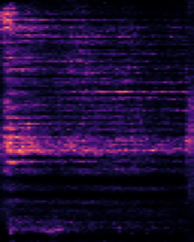
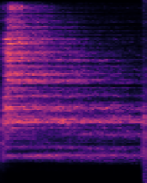
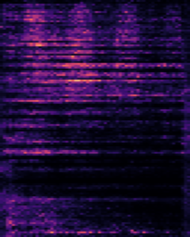


VAE

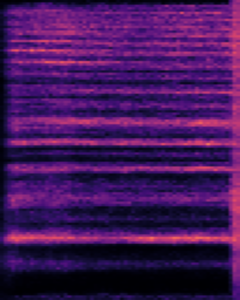


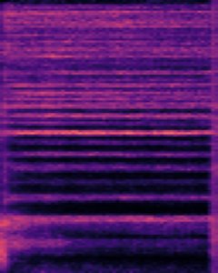

El autoencoder llena todas las bandas; el VAE da armónicos limpios, con la energía de los datos.
Así suenan los espacios vacíos
Autoencoder
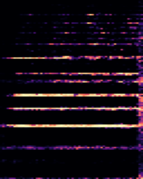
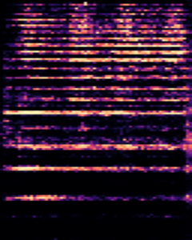
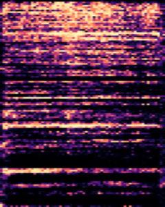
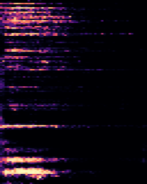
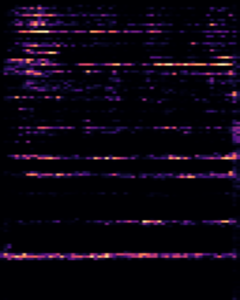
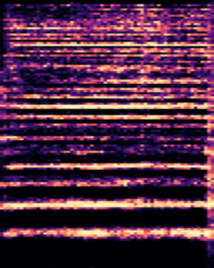
VAE
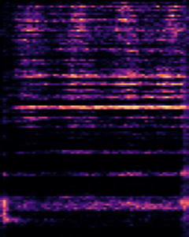
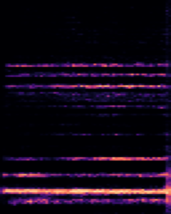
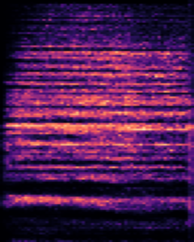
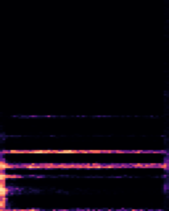
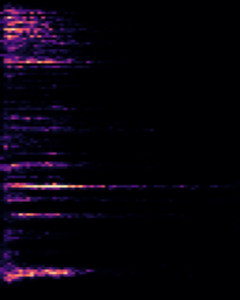
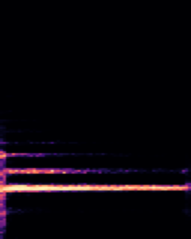
Triple de distancia: el autoencoder da ruido granulado; el VAE, notas más suaves y simples.
A cambio, el VAE reconstruye un poco peor
metal
guitarra
lengüeta
original

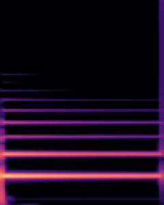

AE
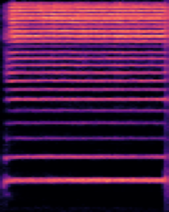
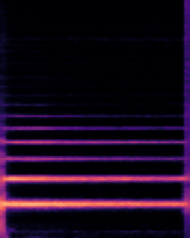
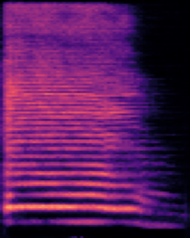
VAE
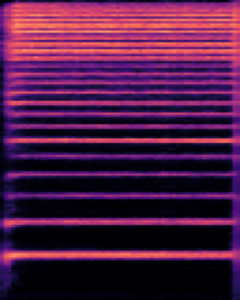
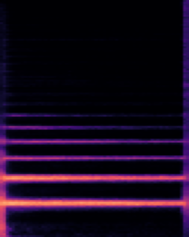

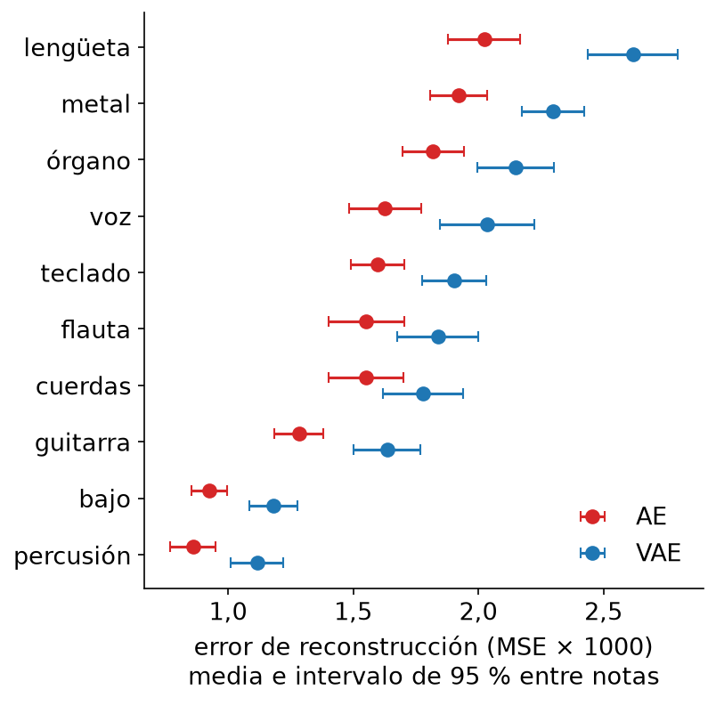
El AE gana en las 10 familias y en el 89 % de las notas
Generar
Los datos · Autoencoder contra VAE · Generar · CNN y latente 2D
Generación: sonidos distintos de sus vecinas
Generada
Vecina real más parecida

Generada
Vecina real más parecida
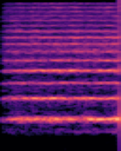
Sorteamos un código y lo decodificamos, sin una nota de entrada.
Interpolación: de una guitarra a un órgano
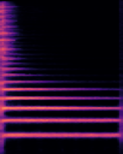
guitarra
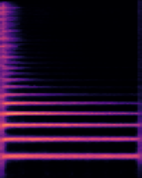
1/7
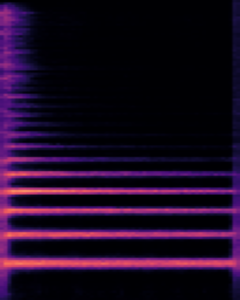
2/7
 3/7
4/7
3/7
4/7
 5/7
5/7
 6/7
órgano
6/7
órgano
La caída se va alargando paso a paso
CNN y latente 2D
Los datos · Autoencoder contra VAE · Generar · CNN y latente 2D
El latente también representa la envolvente
VAE denso de dos dimensiones. Notas sintéticas: seis armónicos en las mismas proporciones.
Las notas más largas y sostenidas tienden a quedar más cerca del origen.
CNN: un filtro busca patrones locales
El mismo filtro recorre el espectrograma y comparte sus pesos.
Usamos convoluciones en el encoder y en el decoder.
NSynth: la CNN reduce el error un 4 %
VAE de 16 dimensiones. Mismos datos, 200 épocas y nueve pares de entrenamientos.
−4.0 %de MSE media
7 / 9pares favorecen
a la CNN
224 notas de instrumentos no vistos. Media ± desvío estándar entre nueve entrenamientos.
NSynth: dos números pierden más detalle
Cada sonido se comprime a 2 o 16 números. Con dos, podemos dibujarlo como un punto en un plano.
Error en 224 notas de prueba. Media ± desvío estándar de tres entrenamientos.
NSynth: altura e instrumento en dos dimensiones
Mismos 1.108 sonidos de la galería. VAE denso arriba; VAE CNN abajo.
¿Podemos generar una nota que no vio?
Retiramos una altura y sus variantes antes de entrenar. Después usamos solo sus dos vecinas.
Sol♯3MIDI 56
En entrenamiento La3MIDI 57
Solo referencia La♯3MIDI 58
En entrenamiento Encoder de las vecinas → promedio de sus medias → decoder
Recorremos 11 puntos; evaluamos siempre el punto medio.
Datos sintéticos: seis armónicos, MIDI 48–72 y distintas envolventes.
Controles: reconstruir la nota conocida, mezclar espectrogramas y usar la vecina inferior.
Dos preguntas, dos comparaciones
Mismo criterio en ambos paneles: nota correcta y estable.
Red fija: VAE denso [512, 128], z = 16.
Datos: sintético microtonal; 1.480 / 1.420 sonidos.
Datos fijos: los mismos 1.120 sonidos sintéticos.
Red: VAE denso [512, 128]; cambia solo z.
Media ± desvío de tres entrenamientos. Las alturas objetivo cambian entre paneles.
Repetimos la comparación en diez entrenamientos
Mismos 1.120 sonidos sintéticos y latente 16. Cambia la arquitectura: densa o CNN.
Media ± desvío estándar de diez entrenamientos. Exigimos una sola nota estable.
La CNN ayuda cuando hay suficiente ruido
σ = 0,10Ambos empeoran.
σ = 0,20−40,5 %
σ = 0,50−76,1 %
El mismo bajo, MIDI 48, semilla 7
| Ruido mel | Entrada | Denso | CNN |
|---|
| σ = 0,10 | | | |
|---|
| σ = 0,20 | | | |
|---|
| σ = 0,30 | | | |
|---|
| σ = 0,50 | | | |
|---|
Media ± desvío estándar de tres entrenamientos. Ruido de entrenamiento: σ = 0,10.
Conclusiones
- Con tres capas ocultas, el autoencoder guarda cada letra en 2 números y la recupera sin errores
- Las letras parecidas quedan cerca, y entre ellas el decodificador inventa letras nuevas
- Para que un autoencoder limpie ruido, hay que entrenarlo con ruido
- El VAE genera notas nuevas porque ordena el espacio latente; a cambio, reconstruye un poco peor
- La CNN mejora modestamente la reconstrucción y ayuda con ruido fuerte; no mejora las notas omitidas.
A
Apéndice
Gráficos de respaldo para preguntas.
El hueco cambia; los extremos son los mismos
Cruces naranjas: alturas excluidas. Puntos grises: entrenamiento. Puntos azules: extremos que codificamos.
Cambia el hueco del entrenamiento; la interpolación sigue usando objetivo −1 y objetivo +1.
Activaciones: las mismas 4 muestras del VAE
Generar
Los datos · Autoencoder contra VAE · Generar
El VAE genera notas nuevas, no copias del dataset
Cada una está 1,6 a 4,6 veces más lejos de su nota más parecida que una nota real de la suya.
Probamos CNN para quitar ruido
Entrada con ruidoEncoderConv 3 × 38 y 16 canales
16valores
DecoderUpsample + ConvReconstruye el mel
Salida de la CNN 884 notas de entrenamiento · 224 de prueba, de instrumentos que no vio
La CNN reduce el error con ruido fuerte
σ = 0,10Las dos redes quedan
peor que no limpiar
σ = 0,50−76,1 %de error con la CNN
El mismo bajo · MIDI 48 · semilla 7
| Ruido mel | Entrada con ruido | Denso | CNN |
|---|
| σ = 0,10 | | | |
|---|
| σ = 0,50 | | | |
|---|
La misma pregunta del audio, ahora visible
Audio: estructura espectral
Armónicos y evolución del sonido.
Figuras: estructura del contorno
Variamos tamaño, posición, giro y color.
¿Genera formas reconocibles al sortear códigos?
El VAE denso generaba contornos difusos
VAE denso [256, 128] · latente 8 · 1.024 imágenes · 200 épocas
Al reconstruir ya se pierden esquinas.
Al generar: fondos con ruido y bordes difusos.
Próxima idea: convoluciones, que miran píxeles vecinos.
Convolución: aprender con píxeles vecinos
Un filtro pequeño aprende combinaciones locales y se reutiliza por toda la imagen.
Encoder: imagen → mapas locales → media y desvío → z.
Decoder: z → mapas → ampliar + convolucionar → imagen.
Sigue siendo un VAE: misma pérdida, MSE + KL.
Las primeras CNN también dejaban bordes difusos
Pilotos: 4.096 imágenes · latente 8 · 100 épocas · mismo peso de KL · semilla 7
Una segunda capa mejora un poco la limpieza
Refinamiento: una convolución 3×3 más al final del decoder.
Mismo modelo de partida y 50 épocas más; solo cambia esa capa.
175/192 → 182/192 imágenes limpias: 91,1 % → 94,8 %.
Limpia: fondo y color uniformes, una sola región.
Más limpieza todavía deja formas incorrectas
Limpieza: fondo uniforme, color parejo y una región principal.
Forma: un contorno reconocible como alguna de las cuatro familias.
Limpieza no cuenta lados ni ángulos.
También probamos dónde sortear los códigos
GMM = mezcla de gaussianas: varias nubes para sortear los códigos.
Ejemplos con ocho nubes
Mismo decoder;
cambia cómo sorteamos z.
93,5 % → 98,8 % limpias, sin reentrenar.
La mejora fue parcial; la lección vuelve al audio
Qué sí mejoró
Segunda capa, en el control pareado:
91,1 % → 94,8 % limpias.
Otro sorteo, mismo decoder:
93,5 % → 98,8 % limpias.
Dos controles distintos: no se suman sus mejoras.
Qué no alcanzamos
La revisión visual de formas no superó el criterio fijado.
Mejorar fondo y color no aseguró contornos inequívocos.
La prueba final reservada quedó sin abrir.
Audio: afinación correcta ≠ espectro correcto.
Figuras: imagen limpia ≠ forma correcta.
Una métrica parcial puede mejorar sin resolver el objetivo completo de generación.
Conclusiones
- Con tres capas ocultas, el autoencoder guarda cada letra en 2 números y la recupera sin errores
- Las letras parecidas quedan cerca, y entre ellas el decodificador inventa letras nuevas
- Para que un autoencoder limpie ruido, hay que entrenarlo con ruido
- El VAE genera notas nuevas porque ordena el espacio latente; a cambio, reconstruye un poco peor
NSynth: comparación de latente 2 y 16
Instrumentos reales. Misma selección y entrenamiento para cada par.
2Coordenadas para visualizar
Colores por altura, familia
y envolvente medida.
16Referencia de reconstrucción
Medimos cuánto cuesta
reducir el espacio latente.
884 notas para entrenar 224 para probar 3 semillas por red
Experimento en curso: VAE denso y CNN, con instrumentos separados entre entrenamiento y prueba.
NSynth: costo de comprimir a dos dimensiones
En prueba, dos dimensiones multiplican la MSE por 2,17 en el denso y 2,61 en la CNN.
Cuatro alturas, distintos instrumentos
175 sonidos: el mismo color puede representar instrumentos y velocidades diferentes.
Las cuatro notas: semilla 17
El orden visual cambia entre semillas. Las líneas unen códigos por altura.
Las cuatro notas: semilla 27
La disposición de cuatro puntos no demuestra un control independiente de la altura.
El latente también representa la envolvente
VAE denso de dos dimensiones. Sonidos sintéticos con la misma receta armónica.
Las notas más largas y sostenidas tienden a quedar más cerca del origen.
NSynth: dos coordenadas para representar notas
VAE denso y convolucional. Cuatro notas del mismo instrumento y velocidad.
MSE de prueba en 2D: denso 0,0341; CNN 0,0387. Promedio de tres semillas.
La CNN no mejoró las notas omitidas
Sonidos sintéticos: excluimos tres alturas e interpolamos entre sus vecinas.
Exigimos altura correcta, estabilidad y evidencia de una sola nota.
La CNN ayuda cuando hay suficiente ruido
σ = 0,10Ambos empeoran.
σ = 0,20−40,5 %
σ = 0,50−76,1 %
El mismo bajo, MIDI 48, semilla 7
| Ruido mel | Entrada | Denso | CNN |
|---|
| σ = 0,10 | | | |
|---|
| σ = 0,20 | | | |
|---|
| σ = 0,50 | | | |
|---|
Reducción de MSE frente a la entrada ruidosa. Los modelos se entrenaron con σ = 0,10.
Generación con una mezcla de gaussianas
Una gaussiana describe una nube por su centro y dispersión. Ajustamos una o varias a los códigos.
NSynth, latente 16 proyectado con PCA. Las gaussianas pueden superponerse.
Elegimos una nube según su peso y sorteamos dentro de ella. El decoder se conserva.
El muestreo ajustado acerca los sonidos
Misma red y tres semillas. Cambia cómo elegimos el código latente.
Normal estándar
Una gaussiana
Ocho gaussianas
De 175 a 31 muestras alejadas sobre 768. La cercanía espectral no garantiza calidad auditiva.
Qué aprendimos al generar sonidos
- El latente representa altura y envolvente. Dos dimensiones permiten verlo, con pérdida de fidelidad.
- La CNN ayudó a quitar ruido fuerte, pero no mejoró las notas omitidas.
- Ajustar dónde sorteamos los códigos acercó las generaciones a los sonidos reales.
Reconstruir, generar e interpolar requieren sus propias comprobaciones.
Probamos CNN para quitar ruido
Un filtro local aprende patrones y reutiliza sus pesos a lo largo del espectrograma.
Entrada con ruidoEncoderConv 3 × 38 y 16 canales
16valores
DecoderUpsample + ConvReconstruye el mel
Salida de la CNN 884 notas de entrenamiento y 224 de prueba.
Denso y CNN reciben exactamente el mismo ruido.
La CNN no mejoró las notas omitidas
Sonidos sintéticos: excluimos tres alturas e interpolamos entre sus vecinas.
Media ± desvío estándar de diez entrenamientos. Exigimos una sola nota estable.
Qué aprendimos al representar sonidos
- El latente representa altura y envolvente.
- Dos dimensiones permiten visualizar los códigos, pero pierden detalle.
- La CNN ayudó a quitar ruido fuerte; no mejoró las notas omitidas.
Una mejor reconstrucción no garantiza una mejor interpolación.
Convoluciones: aprender patrones locales
Un filtro 3 × 3 aprende un patrón y comparte sus pesos al recorrer tiempo y frecuencia.
Encoder
Mel 128 × 64 × 1
Conv 3 × 3 · 8 canalesConv 3 × 3 · 16 canales
Densas 512 → 128 → código
Decoder
Código → densas 128 → 512
Volver a una grillaAmpliar × 2 + Conv · 8 canales
Ampliar × 2 + Conv · 1 canal
En el VAE, el encoder predice media y varianza; en el denoiser, un código directo.
Probamos esta estructura para reconstruir, interpolar y quitar ruido.
Así rindieron los distintos intentos
Un único criterio: altura correcta y estable. Reevaluamos los audios guardados de cada variante.
Media ± desvío de tres entrenamientos. Las etapas cambian datos y objetivos; no son un ranking pareado.
Así rindieron los distintos intentos
Mismo criterio para todas las variantes: nota correcta y estable.
Media ± desvío de tres entrenamientos. Cada etapa usa sus propios datos y notas objetivo.
Repetimos la comparación en diez entrenamientos
Denso frente a CNN, latente 16. Mismo criterio y siete réplicas adicionales por arquitectura.
Media ± desvío estándar de diez entrenamientos. Exigimos una sola nota estable.
¿Podemos generar una nota que no vio?
Retiramos una altura y sus variantes antes de entrenar. Después usamos solo sus dos vecinas.
Sol♯3MIDI 56
En entrenamiento La3MIDI 57
Solo referencia La♯3MIDI 58
En entrenamiento Encoder de las vecinas → promedio de sus medias → decoder
Recorremos 11 puntos; evaluamos siempre el punto medio.
Datos: 25 notas → 1.000 sonidos con envolventes → 1.720 con microtonos.
Controles: reconstruir la nota conocida, mezclar espectrogramas y usar la vecina inferior.
NSynth: el mismo mapa, dos colores
VAE denso de dos dimensiones. Las mismas 224 notas de instrumentos no vistos, en ambos paneles.
Cada punto representa un sonido completo. En NSynth también varían timbre y envolvente.
Qué aprendimos al representar sonidos
- El latente representa altura y envolvente; visualizarlo en 2D pierde fidelidad.
- La CNN redujo la MSE de NSynth un 4 % y ayudó con ruido fuerte.
- Las variantes probadas no resolvieron de forma fiable las notas omitidas.
Reconstruir mejor no garantiza aprender una regla de interpolación musical.
Notas identificadas en el latente sintético
22 alturas enteras
40 envolventes por altura
La♯3 y La♯4 comparten aproximadamente una dirección.
Sol3, Do♯4 y Sol4 están reservadas.
Escala del experimento sintético
22 alturas enteras + 54 alturas microtonales = 76 alturas distintas.
880 sonidos enteros + 540 microtonales = 1.420 muestras.
Arquitecturas: esquema completo
Encoder: capas de ambas redes
VAE denso
Mel → 8.192 valores
Densa 512 · ReLU
Densa 128 · ReLU
Densa 2d → μ y log σ²
3 capas con pesos.
VAE CNN
Mel 128 × 64 × 1
Conv 3×3, salto 2, 8 canales
Conv 3×3, salto 2, 16 canales
Aplanar 8.192 → Densa 512
Densa 128 → Densa 2d
5 capas con pesos.
En ambos: z = μ + exp(log σ² / 2) · ε, con ε normal estándar.
Decoder: convoluciones como una elección
VAE denso
z → Densa 128 · ReLU
Densa 512 · ReLU
Densa 8.192
Sigmoide → mel
3 capas con pesos.
VAE CNN
z → Densa 128 · ReLU
Densa 512 · ReLU
Densa 8.192 · ReLU
Grilla 32 × 16 × 16
Ampliar ×2 + Conv 8
Ampliar ×2 + Conv 1
Sigmoide → mel
5 capas con pesos.